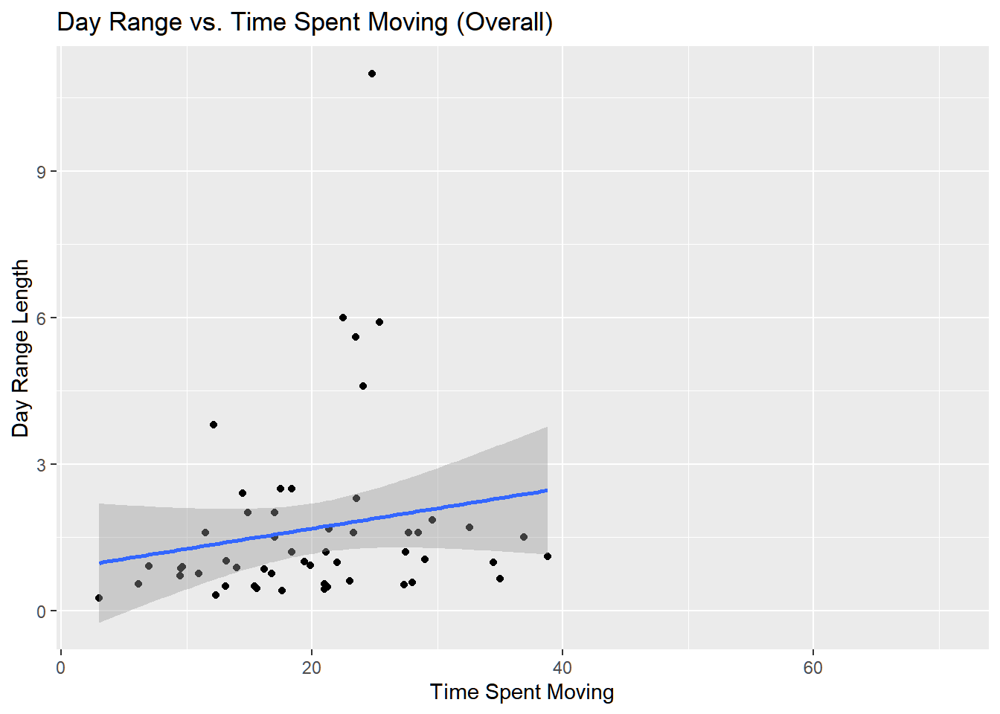
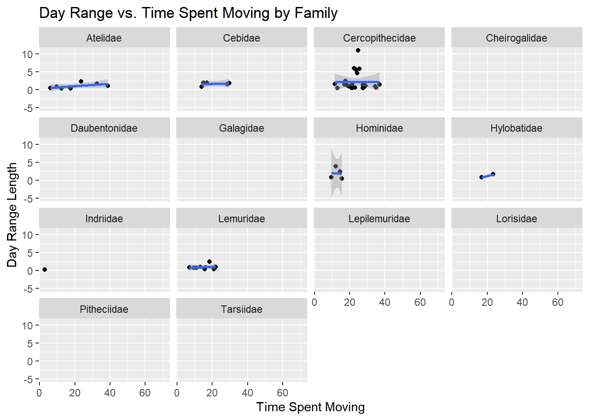
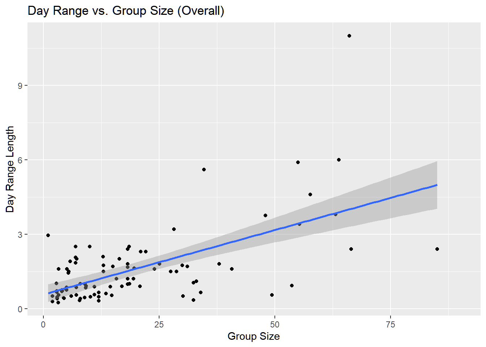
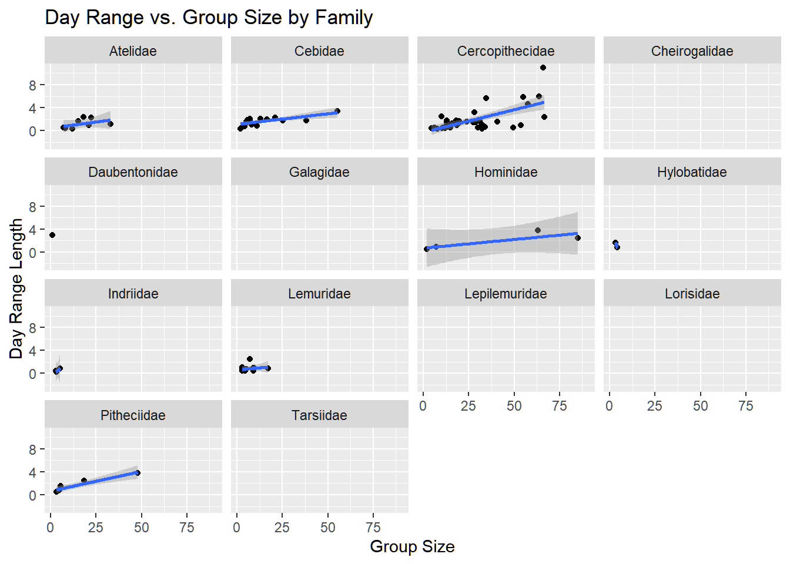
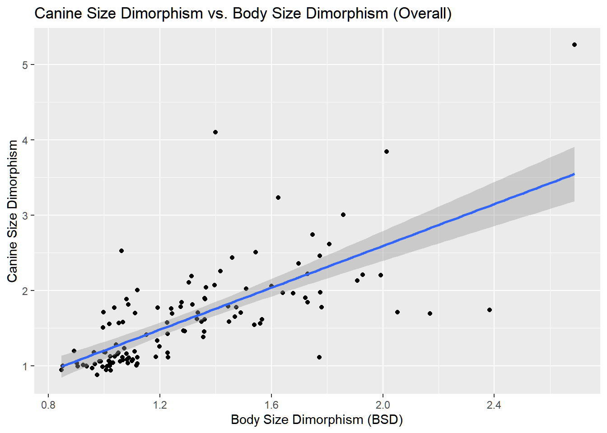
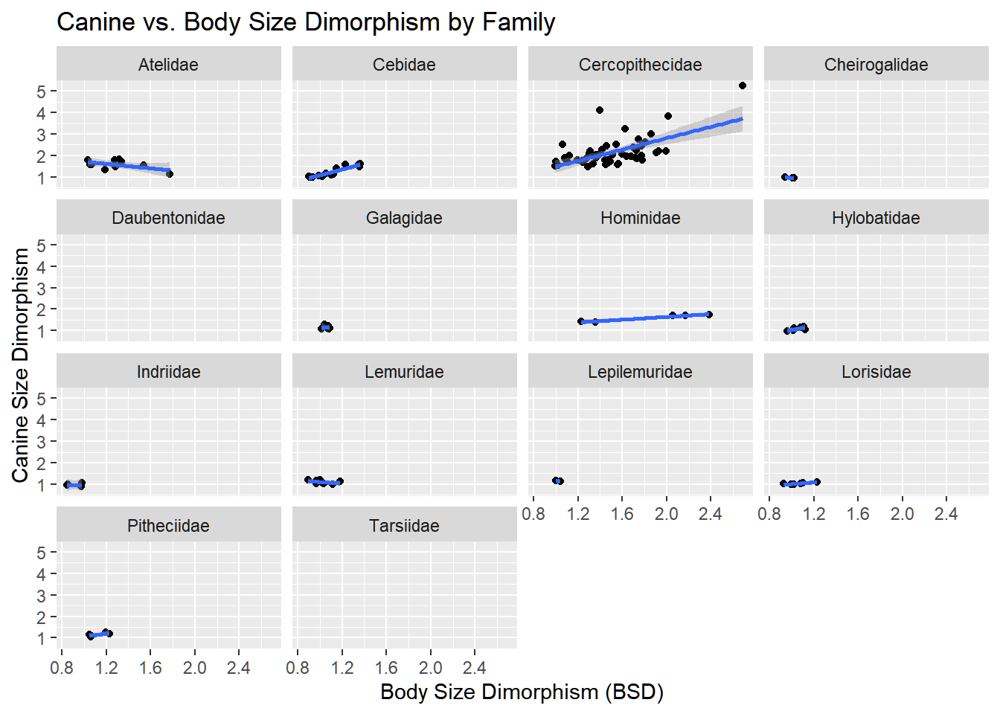
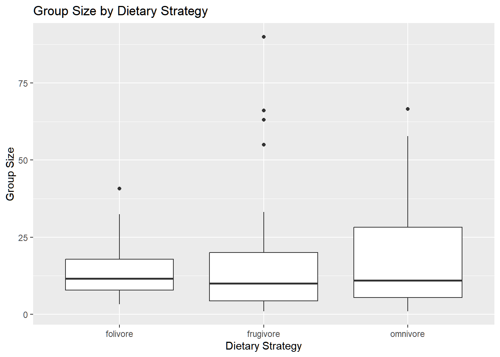

Create a new variable named BSD (body size dimorphism) which is the ratio of average male to female body mass.
d <- d %>%mutate(BSD = Body_mass_male_mean / Body_mass_female_mean)
Create a new variable named sex_ratio, which is the ratio of the number of adult females to adult males in a typical group.
d <- d %>%mutate(sex_ratio = AdultFemale / AdultMales)
Create a new variable named DI (for “defensibility index”), which is the ratio of day range length to the diameter of the home range.
d <- d %>%mutate(DI = DayLength_km / (2*sqrt(HomeRange_km2 / pi)))
Plot the relationship between day range length (y axis) and time spent moving (x axis), for these primate species overall and by family (i.e., a different plot for each family, e.g., by using faceting: + facet_wrap()). Do species that spend more time moving travel farther overall? How about within any particular primate family? Should you transform either of these variables?
Based on the overall plot, species that spend more time moving appear weakly correlated with more travel. It is hard to tell by family based on the lines of best fit whether this holds within any particular primate family, but it seems that they are also weakly correlated. At the moment, I cannot think of any reason to transform the variables based on the plots.
::: {.cell}
# Overall relationshipggplot(d, aes(x = Move, y = DayLength_km)) +geom_point() +geom_smooth(method ="lm") +labs(title ="Day Range vs. Time Spent Moving (Overall)",x ="Time Spent Moving",y ="Day Range Length")
::: {.cell-output .cell-output-stderr} `geom_smooth()` using formula = 'y ~ x' :::
::: {.cell-output .cell-output-stderr} Warning: Removed 160 rows containing non-finite outside the scale range (`stat_smooth()`). :::
::: {.cell-output .cell-output-stderr} Warning: Removed 160 rows containing missing values or values outside the scale range (`geom_point()`). :::
::: {.cell-output-display}  :::
# Relationship by Familyggplot(d, aes(x = Move, y = DayLength_km)) +geom_point() +geom_smooth(method ="lm") +facet_wrap(~ Family) +labs(title ="Day Range vs. Time Spent Moving by Family",x ="Time Spent Moving",y ="Day Range Length")
::: {.cell-output .cell-output-stderr} `geom_smooth()` using formula = 'y ~ x' :::
::: {.cell-output .cell-output-stderr} Warning: Removed 160 rows containing non-finite outside the scale range (`stat_smooth()`). :::
::: {.cell-output .cell-output-stderr} Warning in qt((1 - level)/2, df): Production de NaN :::
::: {.cell-output .cell-output-stderr} Warning: Removed 160 rows containing missing values or values outside the scale range (`geom_point()`). :::
::: {.cell-output .cell-output-stderr} Warning in max(ids, na.rm = TRUE): aucun argument pour max ; -Inf est renvoyé :::
::: {.cell-output-display}  ::: :::
Plot the relationship between day range length (y axis) and group size (x axis), overall and by family. Do species that live in larger groups travel farther overall? How about within any particular primate family? Should you transform either of these variables?
Based on the overall plot, there is a positive linear relationship that is heteroscedastic (conical in shape indicating increasing variance) along the line of best fit. For particular primate families, the same trend seems to be present as in the overall plot. The variability may possibly be rectified by using a log of the day length traveled.
::: {.cell}
# Overall relationshipggplot(d, aes(x = MeanGroupSize, y = DayLength_km)) +geom_point() +geom_smooth(method ="lm") +labs(title ="Day Range vs. Group Size (Overall)",x ="Group Size",y ="Day Range Length")
::: {.cell-output .cell-output-stderr} `geom_smooth()` using formula = 'y ~ x' :::
::: {.cell-output .cell-output-stderr} Warning: Removed 120 rows containing non-finite outside the scale range (`stat_smooth()`). :::
::: {.cell-output .cell-output-stderr} Warning: Removed 120 rows containing missing values or values outside the scale range (`geom_point()`). :::
::: {.cell-output-display}  :::
# Relationship by Familyggplot(d, aes(x = MeanGroupSize, y = DayLength_km)) +geom_point() +geom_smooth(method ="lm") +facet_wrap(~ Family) +labs(title ="Day Range vs. Group Size by Family",x ="Group Size",y ="Day Range Length")
::: {.cell-output .cell-output-stderr} `geom_smooth()` using formula = 'y ~ x' :::
::: {.cell-output .cell-output-stderr} Warning: Removed 120 rows containing non-finite outside the scale range (`stat_smooth()`). :::
::: {.cell-output .cell-output-stderr} Warning in qt((1 - level)/2, df): Production de NaN :::
::: {.cell-output .cell-output-stderr} Warning: Removed 120 rows containing missing values or values outside the scale range (`geom_point()`). :::
::: {.cell-output .cell-output-stderr} Warning in max(ids, na.rm = TRUE): aucun argument pour max ; -Inf est renvoyé :::
::: {.cell-output-display}  ::: :::
Plot the relationship between canine size dimorphism (y axis) and body size dimorphism (x axis) overall and by family. Do taxa with greater size dimorphism also show greater canine dimorphism?
The overall plot demonstrates heteroscedasticity with greater variance around the line of best fit. It appears that there’s a great deal of variation of canine size by family, but in those that express greater size dimorphism, there is also greater canine dimorphism.
::: {.cell}
# Overall relationshipggplot(d, aes(x = BSD, y = Canine_Dimorphism)) +geom_point() +geom_smooth(method ="lm") +labs(title ="Canine Size Dimorphism vs. Body Size Dimorphism (Overall)",x ="Body Size Dimorphism (BSD)",y ="Canine Size Dimorphism")
::: {.cell-output .cell-output-stderr} `geom_smooth()` using formula = 'y ~ x' :::
::: {.cell-output .cell-output-stderr} Warning: Removed 94 rows containing non-finite outside the scale range (`stat_smooth()`). :::
::: {.cell-output .cell-output-stderr} Warning: Removed 94 rows containing missing values or values outside the scale range (`geom_point()`). :::
::: {.cell-output-display}  :::
# Relationship by Familyggplot(d, aes(x = BSD, y = Canine_Dimorphism)) +geom_point() +geom_smooth(method ="lm") +facet_wrap(~ Family) +labs(title ="Canine vs. Body Size Dimorphism by Family",x ="Body Size Dimorphism (BSD)",y ="Canine Size Dimorphism")
::: {.cell-output .cell-output-stderr} `geom_smooth()` using formula = 'y ~ x' :::
::: {.cell-output .cell-output-stderr} Warning: Removed 94 rows containing non-finite outside the scale range (`stat_smooth()`). :::
::: {.cell-output .cell-output-stderr} Warning in qt((1 - level)/2, df): Production de NaN :::
::: {.cell-output .cell-output-stderr} Warning: Removed 94 rows containing missing values or values outside the scale range (`geom_point()`). :::
::: {.cell-output .cell-output-stderr} Warning in max(ids, na.rm = TRUE): aucun argument pour max ; -Inf est renvoyé :::
::: {.cell-output-display}  ::: :::
Create a new variable named diet_strategy that is "frugivore" if fruits make up >50% of the diet, "folivore" if leaves make up >50% of the diet, and "omnivore" if diet data are available, but neither of these is true (i.e., these values are not NA). Then, do boxplots of group size for species with different dietary strategies, omitting the category NA from your plot. Do frugivores live in larger groups than folivores?
Based on the mean of the boxplot, it appears that the frugivores do not live in larger groups than the folivores on average. However, the frugivores do have a greater range of groups sizes than that of the folivores ( so some frugivores may live in larger groups than the folivores)
::: {.cell}
d <- d %>%mutate(diet_strategy =case_when( Fruit >50~"frugivore", Leaves >50~"folivore",!is.na(Fruit) &!is.na(Leaves) ~"omnivore",TRUE~NA_character_ ))f <- d %>%filter(!is.na(diet_strategy)) %>%ggplot(aes(x = diet_strategy, y = MeanGroupSize)) +geom_boxplot() +labs(title ="Group Size by Dietary Strategy",x ="Dietary Strategy",y ="Group Size")f
::: {.cell-output .cell-output-stderr} Warning: Removed 19 rows containing non-finite outside the scale range (`stat_boxplot()`). :::
::: {.cell-output-display}  ::: :::
In one line of code, using {dplyr} verbs and the forward pipe (|> or %>%) operator, do the following:
Add a variable, Binomial to the data frame d, which is a concatenation of the Genus and Species variables…
Trim the data frame to only include the variables Binomial, Family, Brain_size_species_mean, and Body_mass_male_mean…
Group these variables by Family…
Calculate the average value for Brain_Size_Species_Mean and Body_mass_male_mean per Family (remember, you may need to specify na.rm = TRUE)…
Arrange by increasing average brain size…
And print the output to the console
g <- d %>%mutate(Binomial =paste(Genus, Species)) |>select(Binomial, Family, Brain_Size_Species_Mean, Body_mass_male_mean) |>group_by(Family) |>summarize(avg_brain =mean(Brain_Size_Species_Mean, na.rm =TRUE),avg_body_mass =mean(Body_mass_male_mean, na.rm =TRUE)) |>arrange(avg_brain) |>print()